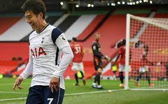

| Firstname | Lastname | Age |
|---|---|---|
| Priya | Sharma | 24 |
| Arun | Singh | 32 |
| Sam | Watson | 41 |
Just the day before, our host had written of the challenges of writing short. In journalism–my friend’s chosen trade, and mostly my own, too–Mark Twain’s observation undoubtedly applies: “I didn’t have time to write a short letter, so I wrote a long one instead.” The principle holds across genres, in letters, reporting, and other writing. It’s harder to be concise than to blather. (Full disclosure, this blog post will clock in at a blather-esque 803 words.) Good writing is boiled down, not baked full of air like a souffl??. No matter how yummy souffl??s may be. Which they are. Yummy like a Grisham novel. Lately, I’ve been noticing how my sentences have a tendency to keep going when I write them onscreen. This goes for concentrated writing as well as correspondence. (Twain probably believed that correspondence, in an ideal world, also demands concentration. But he never used email.) Last week I caught myself packing four conjunctions into a three-line sentence in an email. That’s inexcusable. Since then, I have tried to eschew conjunctions whenever possible. Gone are the commas, the and’s, but’s, and so’s; in are staccato declaratives. Better to read like bad Hemingway than bad Faulkner. Length–as we all know, and for lack of a more original or effective way of saying it–matters. But (ahem), it’s also a matter of how you use it. Style and length are technically two different things. Try putting some prose onscreen, though, and they mix themselves up pretty quickly. This has much to do with the time constraints we claim to feel in the digital age. We don’t have time to compose letters and post them anymore–much less pay postage, what with all the banks kinda-sorta losing our money these days–so we blast a few emails. We don’t have time to talk, so we text. We don’t have time to text to specific people, so we update our Facebook status. We don’t have time to write essays, so we blog.
